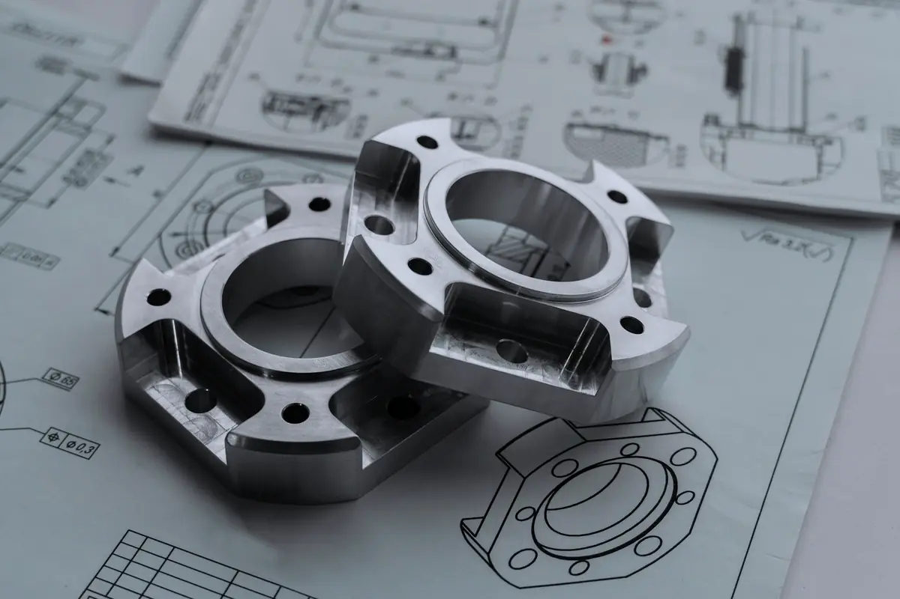
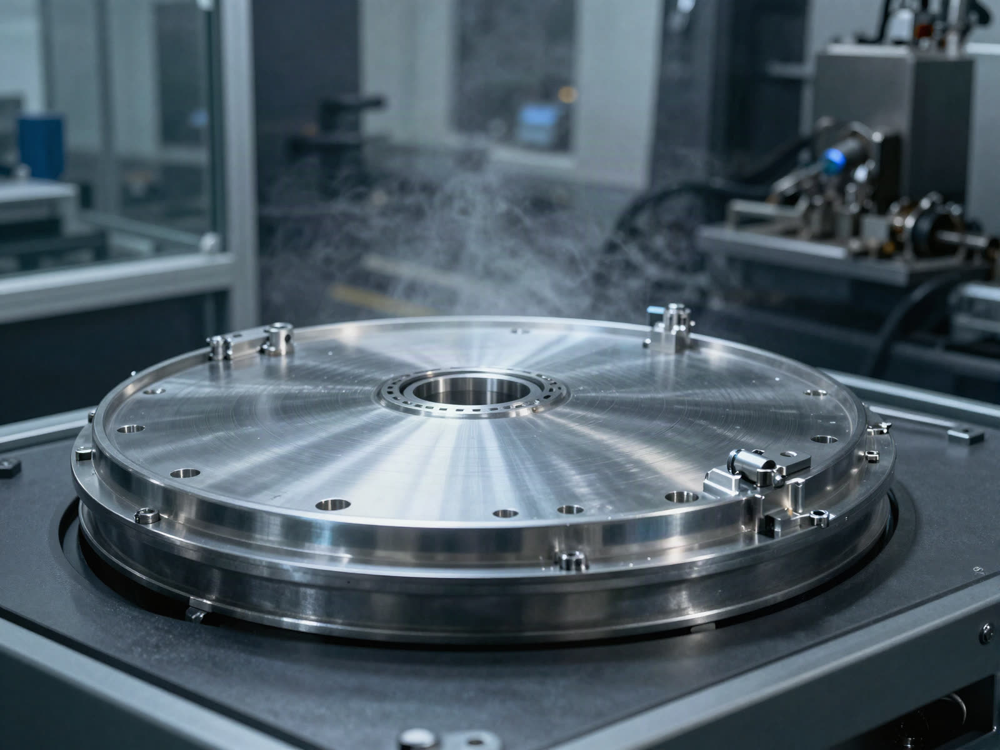
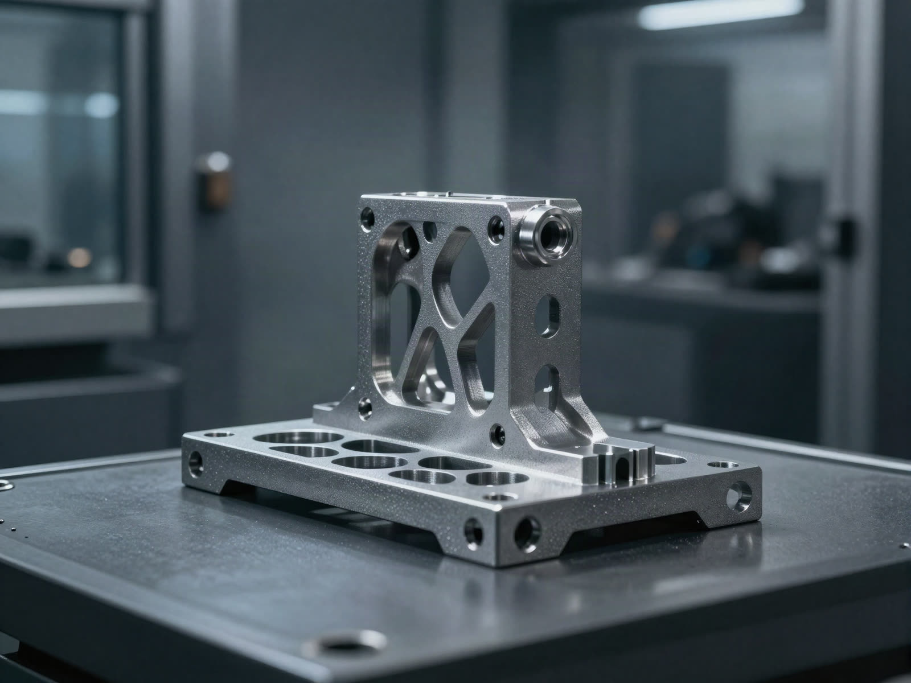
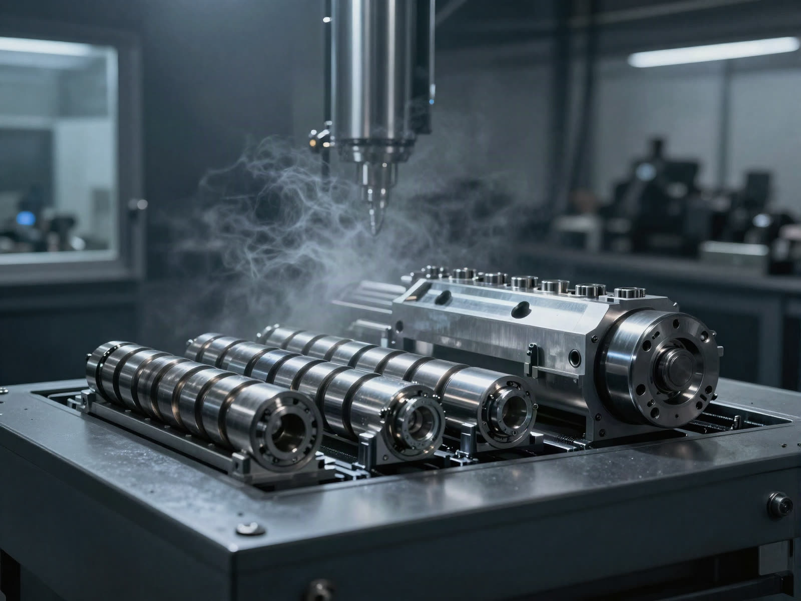
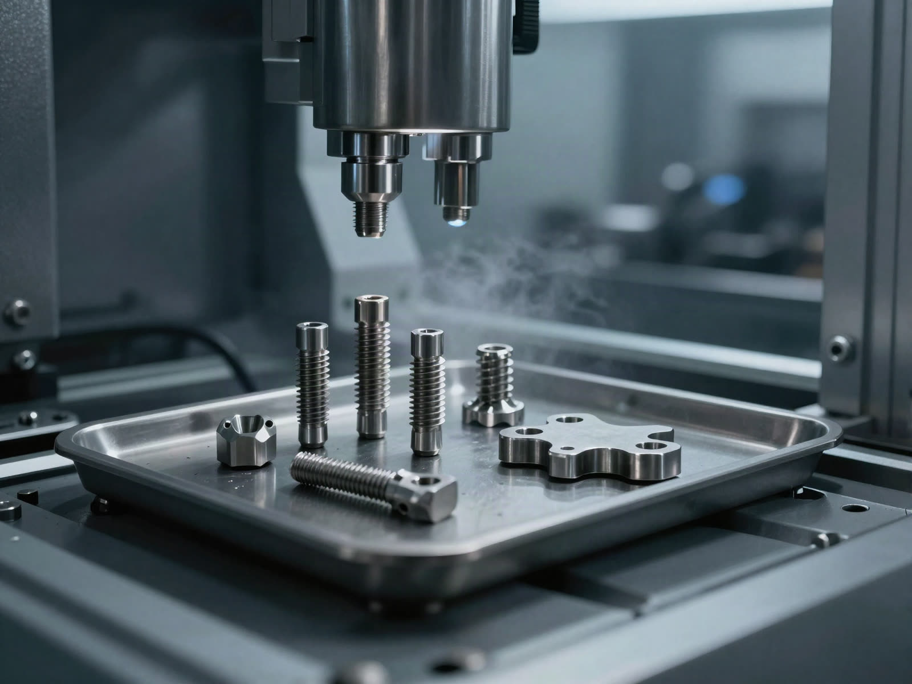
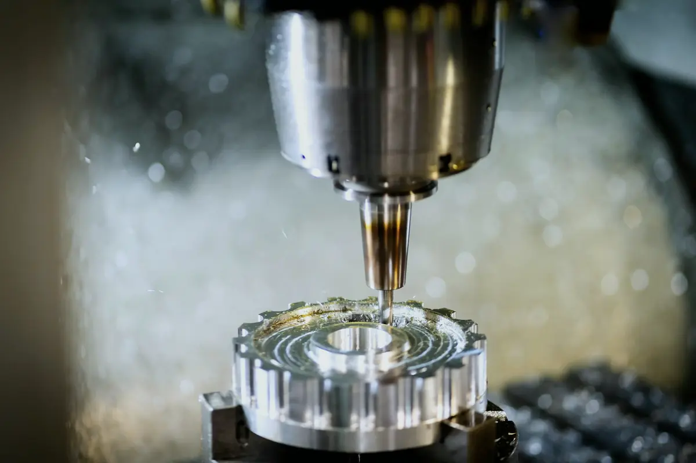
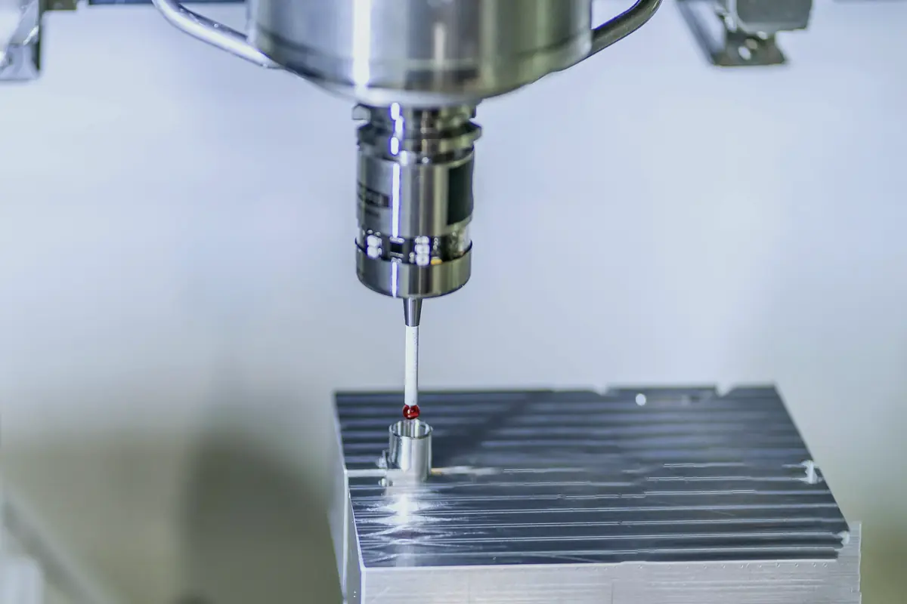
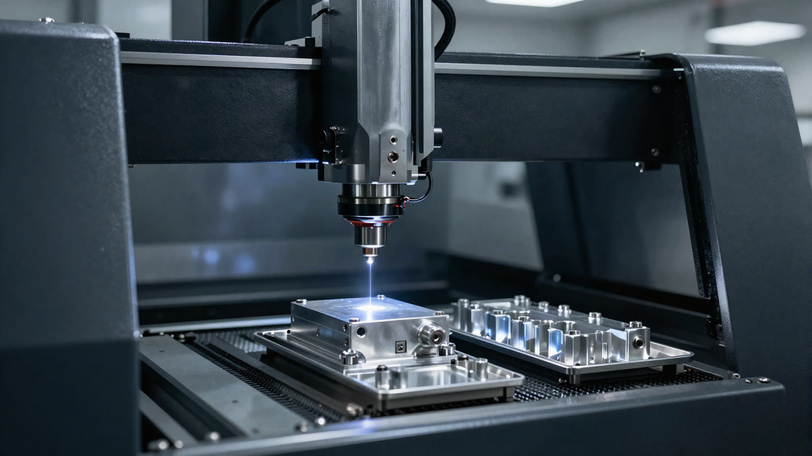

01
동시 5축 가공 최적화
복잡한 형상에 최단 공구 경로를 만듭니다.
형상과 기준면, 관리 포인트를 먼저 확인합니다. 고정 방법과 소재 변형까지 제조성을 검토합니다.
고정, 공구 접근, 가공 순서를 정합니다. 자체 CAM 로직으로 포스트 프로세싱을 직접 제어합니다.
독일·일본산 동시 5축 머시닝센터로 알루미늄, SUS, 티타늄의 복합 형상을 깎습니다.
3차원 좌표측정기와 3D 스캐너, 조도 측정기로 미크론 단위 공차를 확인합니다.
레이저 마킹으로 부품을 식별하고, 로트별 검사 이력과 함께 검사 성적서를 발행합니다.
01기술력
공정 설계부터 검사 이력까지, 5축 가공의 전 과정을 직접 관리합니다.
복잡한 형상에 최단 공구 경로를 만듭니다.
난삭재의 표면 조도를 개선합니다.
미크론 단위 오차까지 가공과 측정으로 관리합니다.
알루미늄 중심, SUS와 티타늄까지 가공합니다.
레이저 마킹으로 검사 이력을 부품마다 남깁니다.
공구 간섭과 후공정 조건까지 미리 봅니다.

02회사 소개
(주)뉴젠텍은 2005년 9월 설립된 5축·다축 정밀가공 전문 기업입니다. 설계 검토부터 가공과 측정까지, 경기도 오산 가장산업단지의 자가 공장에서 일관 생산합니다.
03사업분야
반도체 장비부터 의료기기까지, 높은 신뢰성이 필요한 산업에 부품을 공급합니다.

01전공정 장비의 고정밀 부품과 진공 환경용 특수 부품.

02금속 3D 프린팅 적층물의 고난이도 후가공.

03자동화 설비 모듈과 전극 공정용 정밀 부품 양산.

04티타늄 임플란트 파츠와 정형외과용 수술 도구.
04생산역량
가공 설비와 공구·절삭유 관리 체계를 100% 자가 공장에 갖췄습니다.

05회사 연혁
회사를 설립하고 ISO 9001 인증을 받았습니다.
자동화 생산 시스템과 ERP를 구축하고, 3차원 좌표측정기와 레이저 마킹 설비를 들였습니다. 이노비즈와 ISO 14001 인증.
CAD/CAM을 고도화하고 오산 자가 공장으로 이전했습니다. 한국핵융합가속기기술진흥협회 정회원.
위험성평가 우수사업장 인정. 한국가속기부품사업협동조합 회원.
3차원 좌표측정기를 추가로 도입했습니다.
06품질체계
ISO 9001 품질체계와 독일산 3차원 좌표측정기로 공차를 확인합니다.

3차원 좌표측정기 여러 대와 3D 스캐너, 2차원 측정기, 조도 측정기를 운영합니다.

ISO 9001, ISO 14001, 이노비즈 인증과 한국산업안전보건공단의 위험성평가 우수사업장 인정.